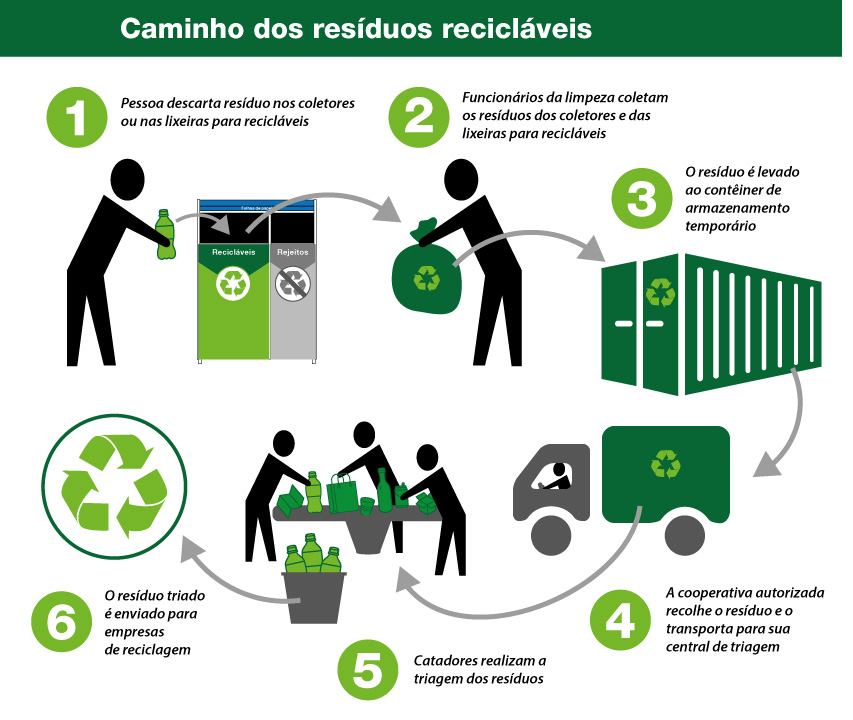

DF terá seis pontos para reciclagem de eletrônicos e eletrodomésticos
A Secretaria do Meio Ambiente (Sema), a Associação Brasileira de Reciclagem de Eletroeletrônicos e Eletrodomésticos (Abree) e a empresa Zero Impacto Logística Reversa, assinaram, nesta sexta-feira (24), um acordo de cooperação para reciclagem de eletroeletrônicos e eletrodomésticos.
Na prática, a parceria vai garantir que os equipamentos em desuso tenham destinação final adequada, evitando que sejam jogados em lixões e aterros e prejudiquem o meio ambiente. O contrato prevê a instalação de pontos de coleta espalhados pelo Distrito Federal para descarte voluntário da população, além do serviço de recolhimento agendado. A iniciativa, que terá custo zero para o governo, é um avanço no tema.
 Além do serviço agendado, haverá pontos de coleta espalhados pelo DF para descarte voluntário | Foto: Lúcio Bernardo Jr Brasília
Além do serviço agendado, haverá pontos de coleta espalhados pelo DF para descarte voluntário | Foto: Lúcio Bernardo Jr Brasília
Agendamento
Em um primeiro momento, seis regiões administrativas –asas Sul e Norte, Lago Sul, Guará II, Águas Claras e Taguatinga Sul – contarão com esses postos de coleta. Por meio de um serviço telefônico, o (61) 3301-3584, ou pelo site da Zero Impacto Logística Reserva, a população poderá agendar um horário para coleta do lixo eletrônico. Basta cumprir alguns requisitos, como o peso mínimo de 30 kg. A destinação final desses produtos coletados, dentro das normas ambientais, ficará a cargo da Abree.
“Essa parceria é para garantir que os produtos descartados, voluntariamente, pela sociedade, possam seguir seu destino correto, contribuindo para a economia, a redução de custo e o bem-estar do meio ambiente”, salientou o presidente da Abree, Sérgio de Carvalho Maurício.
De acordo com a Política Nacional de Resíduos Sólidos (PNRS), fabricantes, importadores, distribuidores e comerciantes devem dividir a responsabilidade pelo ciclo de vida do produto, sendo a logística reversa um dos instrumentos.
Desde 2010 no DF, a Zero Impacto Logística Reversa oferece serviços como coleta e transporte de resíduos eletroeletrônicos, gerenciamento e gestão de pontos de coletas de ecopontos, recondicionamento de equipamentos, apoio a projetos de inclusão digital, entre outros. “Bom constatar que a Sema tem alcançado grandes objetivos em toda a cadeia dos resíduos recicláveis no DF”, destacou o diretor-técnico da empresa, Gustavo Bertolino. “Temos muito trabalho pela frente, o desafio é grande”.
Na assinatura do acordo de cooperação, o governo federal esteve representado pelo secretário de Qualidade Ambiental no Ministério do Meio Ambiente, André França. “Cada um fazendo sua parte, conseguimos uma grande transformação sobre o tema, evitando a poluição do solo e da água”, disse ele.

Futuros pontos de coleta.